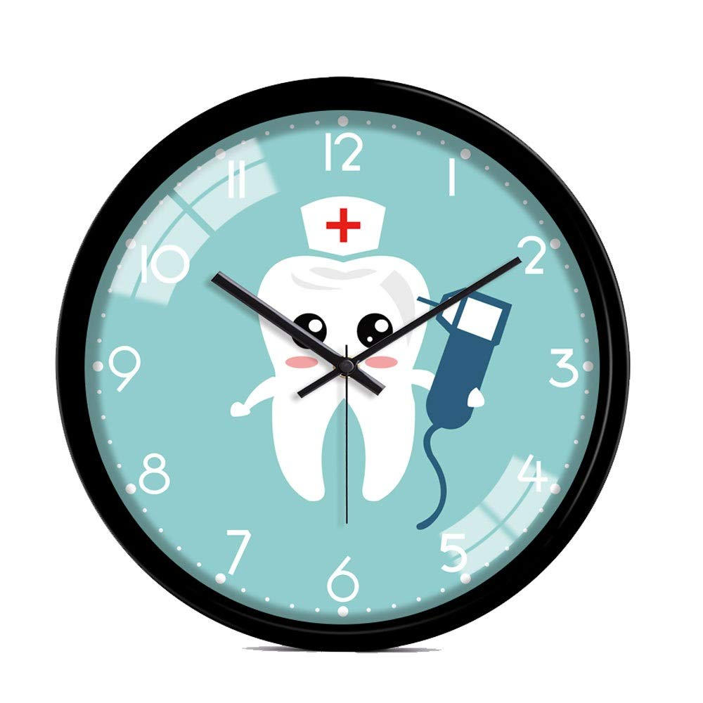

LIONS GATE HOSPITAL
El Hospital Lions Gate, también conocido como LGH, es una destacada institución de atención médica ubicada en
North Vancouver, Columbia Británica, Canadá. Es uno de los principales hospitales dentro de la autoridad de Salud de
la Costa de Vancouver (VCH), sirviendo a una amplia población en la región.
El hospital recibe su nombre del Puente
Lions Gate, que conecta Vancouver con la costa norte y atraviesa el Burrard Inlet, cerca de su ubicación.
Establecido en 1961, el Hospital Lions Gate tiene una rica historia de proporcionar servicios médicos integrales a la
comunidad local y más allá. Con el tiempo, ha evolucionado en un importante centro de atención aguda, ofreciendo una
amplia gama de especialidades médicas y tecnologías de vanguardia para brindar la mejor atención médica posible a sus
pacientes.
El Hospital Lions Gate está conformado por un equipo capacitado de médicos, enfermeras, especialistas y personal de apoyo
que trabajan juntos para brindar una atención compasiva y de alta calidad a los pacientes. Se esfuerza constantemente por
mejorar sus servicios, adaptarse a las cambiantes necesidades de atención médica y mantenerse a la vanguardia de la innovación
médica en la región. Como pilar de la atención médica en North Vancouver, el Hospital Lions Gate sigue comprometido a servir a
la comunidad y mejorar la salud y el bienestar de sus pacientes.
SERVICIOS INCLUIDOS
Medicina de emergencia: El departamento de emergencias opera las 24 horas del día, los 7 días de la semana, y cuenta con personal médico capacitado para atender casos críticos y de urgencia, garantizando una respuesta rápida y efectiva ante situaciones médicas agudas.
Cirugía: El hospital realiza una amplia variedad de procedimientos quirúrgicos, desde cirugías de rutina hasta intervenciones complejas. Cuenta con quirófanos bien equipados y un equipo de cirujanos experimentados.
RECURSOS LIONS
TIEMPO DE ESPERA
- Variabilidad en la Duracion
- Esperas Programadas
- Citas Programadas
CALIDAD DE ATENCION

- Competencia y experiencia
- Seguridad del Paciente
- Comunidad Efectiva
LIMPIEZA Y COMODIDADES

- Limpieza y Mantenimiento
- Acceso al agua potable
- Control de infecciones